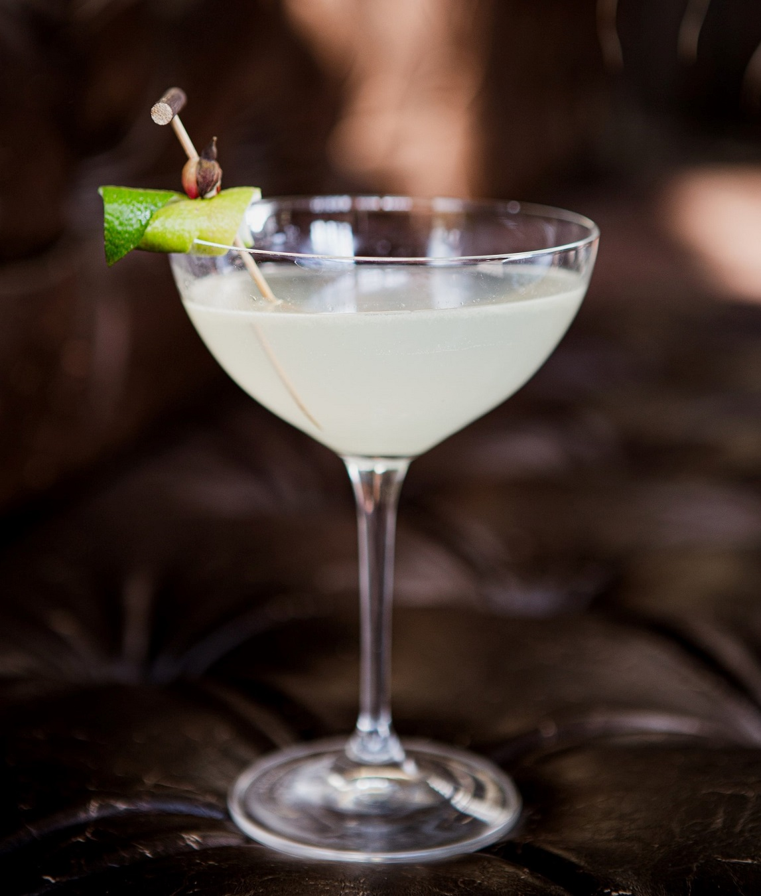

Daiquiri
다이키리
#바닷가에서 #라틴 음악이 들리는 #상큼한 #약간의 탄산 #높은 도수

Ingredients
- 쿠바산 화이트 럼 60ml
- 라임주스 20ml
- 고운 설탕 2tsp
- 얼음 100g
- 마티니 글라스
Recipe
- 칵테일 세이커에 럼, 라임 주스, 설탕을 넣고 바 스푼으로 저어서 설탕을 녹여줍니다.
- 얼음을 넣고 8~10초 가량 흔들어줍니다.
- 얼음을 체로 걸러내 차갑게 식힌 마티니 글라스에 따라줍니다.
History
다이키리는 쿠바에 있는 광산 이름인데, 다이키리 광산에서 일하던 미국인 기술자 제닝스 콕스(Jennings cox)가 쿠바 현지의 럼과 라임, 설탕을 섞어서 만든 것이 시초라고 합니다.
이후 1902년, 산티아고 철광산을 매입한 미국 하원 의원 윌리엄 A. 찬들러(William A. Chanler)가 그해 뉴욕의 클럽에 다이키리를 소개했을 가능성도 있다는데요.
1909년까지 다이키리의 소비는 지역적으로 제한되어 있었는데, 미국 해군(U.S. Navy) 의무관인 루시우스 W. 존슨(Lucius W. Johnson) 소장이 콕스의 음료를 마셔본 후, 워싱턴 D.C.의 육군·해군 클럽(Army and Navy Club (Washington, D.C.))에 소개하면서 수십 년 만에 다이키리를 마시는 사람들이 증가했습니다.